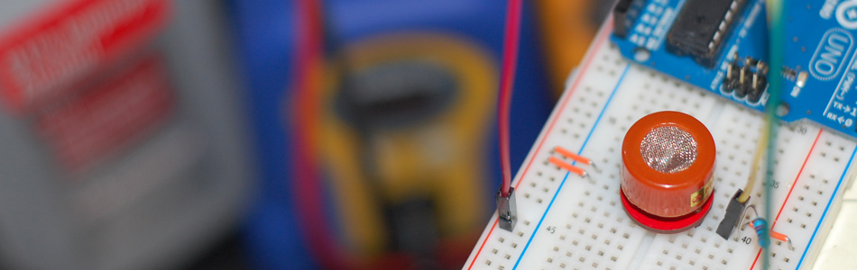

MQ-3 Alcohol Sensor, Breakout Board + Arduino

A lot has happened since our last article was published and to celebrate the continuance of bildr we'll be playing with the MQ-3 Alcohol Gas Sensor. Coupled with the SparkFun Gas Sensor Breakout Board, connecting the MQ-3 to your Arduino is a breeze.
The MQ-3 is a heater-driven alcohol sensor that outputs an analog signal (usually interpreted somewhere between 150 and 1023 depending on how long you let the sensor warm up), which through the use of your Arduino code and calibration, can be interpreted for whatever use you need.
Putting The Pieces Together
When attaching your MQ-3 to the SparkFun Breakout Board, it should be noted that it doesn't matter which way the MQ-3 alcohol sensor is pressed in. Both the A pins are electronically the same as well as the B pins. The center pins on both sides are the heater element pins. Since the circuit will be running on +5V DC it doesn't matter which way the sensor is soldered to the board. As long as you have the SparkFun logos and pin labels facing downward, so you can still see them when the sensor is flipped over, you are good to go!
Calibration: If you take your time, you can find out what values equate to specific percentages or even blood alcohol concentration in the case of a breathalyzer. You will of course need to calibrate your MQ-3 based on your specific Arduino code since sensor readings will vary. Although I can't help with your specific calibration scenario, the best advice I can give you is to use several isopropyl alcohol bottles at different percentages for your testing. Do NOT get the sensor wet with alcohol! Simply squeeze to breathe the vapors of the alcohol into the sensor and take your readings.

Code
The Arduino code for this is very simple if you just want to view the raw data.
int mq3_analogPin = A0; // connected to the output pin of MQ3 void setup(){ Serial.begin(9600); // open serial at 9600 bps } void loop() { // give ample warmup time for readings to stabilize int mq3_value = analogRead(mq3_analogPin); Serial.println(mq3_value); delay(100); //Just here to slow down the output. }
Article taken from bildr.org with minor changes - I am the original author of this content